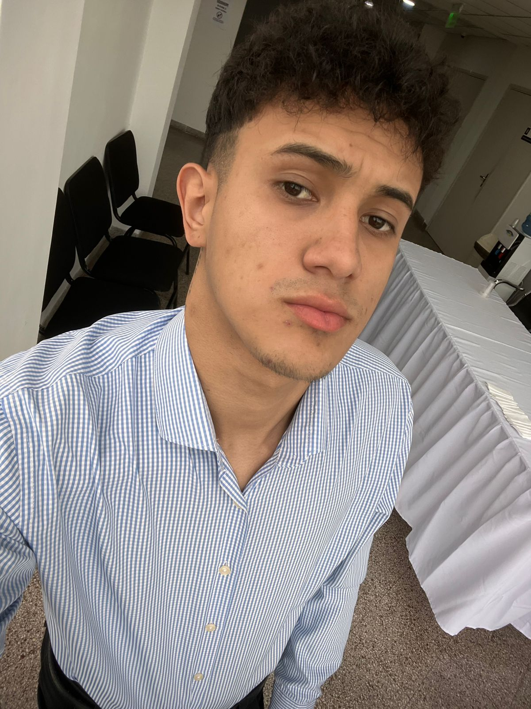

Rodrigo Ronaldo Molinas Baez
Perfil profesional
Soy estudiante de la carrera de analisis de sistemas informatico, apasionado por el desarrollo web.
Me gusta crear paginas simples y funcionales.
- HTML basico
- Microsoft word
- Trabajo en equipo
- Responsable
Estudios
- Bachiller concluido en ciencias Sociales
- 2016 - 2021: Colegio Nacional Naciones Unidas
- Curso Tecnico en pc
- 2025 - 2026: Instituto Remeric
- Actualidad - 2026:Estudiante universitario de analisis de sistemas
- Universidad Tecnologica Intercontinental - UTIC
Contacto
Email:rodriigom@gmail.com
Telefono: 0986 697 379